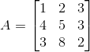

三者关系
1. 矩阵的迹(trace)的和与特征值和相等
2. 矩阵的行列式值为特征值的乘积
从简单例子出发
假定有一矩阵A：

用以下公式可以求出特征值：

我们将上式进行分解可得：
进一步求值可得：
整理下可得：
我们从另一个角度来看特征值：
将其展开可得：
跟上式对比：
可得最开始说的关系公式：
推广到n*n矩阵
按照3*3的矩阵，我们可以推出n*n的矩阵A求特征值的分解形式：
其中，Ej的定义为消掉(n-j)行和列的特征值后矩阵剩下的全部可能余子式(大小为j*j)的和，余子式的个数为
其中最特别的就是E1和En，E1为trace的和，En为行列式的值。
再从另外一个角度看n*n的矩阵A求特征值：
其中Sj的定义为去掉(n-j)个λ值后剩下的λ乘积的和，其个数同样是：
其中最特别的也是S1和Sn，S1为所有λ的和，Sn为所有λ的乘积。
对比上面两式，可以得出E1=S1，En=Sn，故矩阵的迹的和等于特征值的和，矩阵的行列式值等于特征值的乘积。